El 28 de noviembre de 2026 recuperamos la edición española Big Box de In the 1st Degree: Asesinato en Primer Grado (1995) en Windows 10 mediante DOSBox Staging y Windows 3.1. El juego utiliza vídeo digitalizado como parte esencial de la investigación. La actualización de QuickTime 2.03 a 2.1.2 de 16 bits permitió reproducir tanto la introducción como los vídeos interactivos. Comprobamos también el guardado, la carga, el intercambio de CD y el arranque portable a pantalla completa.
Ficha de la edición · Preservación de los dos CD-ROM
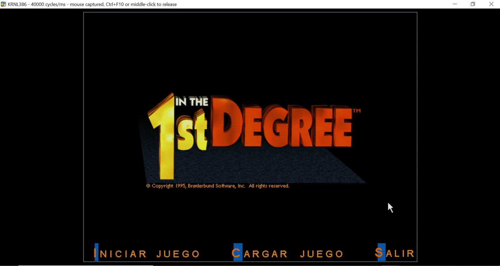
1. Requisitos y preparación
- Windows 10 Pro 22H2 x64, build 19045 (entorno probado; Windows 11 no probado).
- DOSBox Staging 0.83.0 (7b400), paquete portable completo para Windows. Descargas.
- Una instalación legítima de Windows 3.1 en español, con S3 Vision 964 v1.41B5 y controladores Creative Sound Blaster 16 para Windows 3.1. Utiliza una copia independiente del entorno base descrito en la guía de preparación de Windows 3.1 y controladores. Para esta edición de CD de datos no es necesario el controlador Audio CD [MCI].
- Dos imágenes ISO de trabajo de los CD originales, no los másteres. Ambas contienen una pista de datos Mode 1/2048; no tienen pistas CDDA.
- QuickTime 2.1.2 para Windows 3.1 (16 bits), disponible en WinWorld. Paquete de tercero: comprobar el fichero antes de utilizarlo y mantener el entorno antiguo aislado de Internet.
Crea una carpeta InThe1stDegree, con la carpeta completa del emulador llamada dosbox-staging-v0.83.0_win3X y una carpeta hermana CD. Copia en esta última las imágenes 1STDEGREE1.ISO y 1STDEGREE2.ISO. Dentro de la carpeta del emulador debe existir drives\c con Windows 3.1 y los controladores instalados.
Desde PowerShell, en la raíz del conjunto, verifica las imágenes de trabajo:
Get-FileHash -Algorithm SHA256 -LiteralPath '.\CD\1STDEGREE1.ISO', '.\CD\1STDEGREE2.ISO'| Imagen de esta edición | Bytes | SHA-256 |
|---|---|---|
| 1STDEGREE1.ISO | 681568256 | 473F337AF1827C71D39B4124721E4DF8B225FC34812F722BCA6D6CC7F113DA4C |
| 1STDEGREE2.ISO | 667607040 | 3916D1038CC66B7BEE1243D57EC0329DD5853DF00213A7379496A27C05D1664B |
Los hashes corresponden a nuestra edición; otros prensados pueden diferir. PC Game Archive no distribuye imágenes de los discos, Windows ni QuickTime.
2. Configura la base de DOSBox y Windows
La máquina emulada es svga_s3 (S3 Trio64, 4 MB de VRAM), 32 MB de RAM y Sound Blaster 16, puerto 220h, IRQ 7, DMA 1 y DMA alta 5. El núcleo normal trabaja a 40.000 ciclos/ms. Utiliza la configuración completa de la sección 7, pero durante la instalación establece fullscreen = false y omite las tres últimas líneas (cd, win y exit) de [autoexec].
La base reutilizada contiene C:\AUTOEXEC.BAT con la siguiente configuración, que se ejecuta al arrancar DOSBox. Comprueba que existen los ejecutables y los directorios de la base antes de usarla.
SET SOUND=C:\SB16
SET BLASTER=A220 I7 D1 H5 P330 T6
REM ** SET BLASTER=A220 I5 D1 H5 P330 T6
SET MIDI=SYNTH:1 MAP:E
C:\SB16\DIAGNOSE /S
C:\SB16\MIXERSET /P /Q
C:\WINDOWS\SMARTDRV.EXE
PATH C:\WINDOWS;
SET TEMP=C:\WINDOWS\TEMPEn PowerShell, desde la carpeta del emulador:
.\dosbox.exe --noprimaryconf --conf dosbox.confLa unidad C: se monta automáticamente desde drives\c. Las dos ISO se montan en D: y se alternan con Ctrl + F4. Comprueba que DIR D:\ muestra MOVIES1 y RSRC1 en el primer disco y MOVIES2 y RSRC2 en el segundo. Vuelve al primer disco antes de instalar.

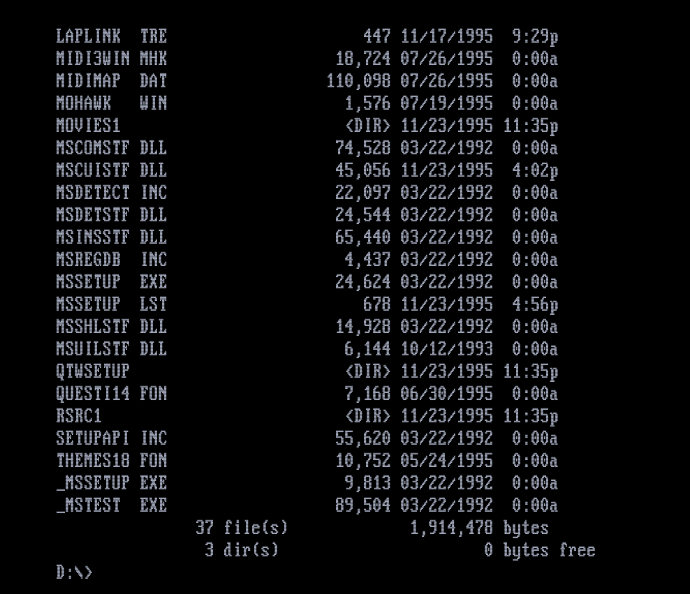
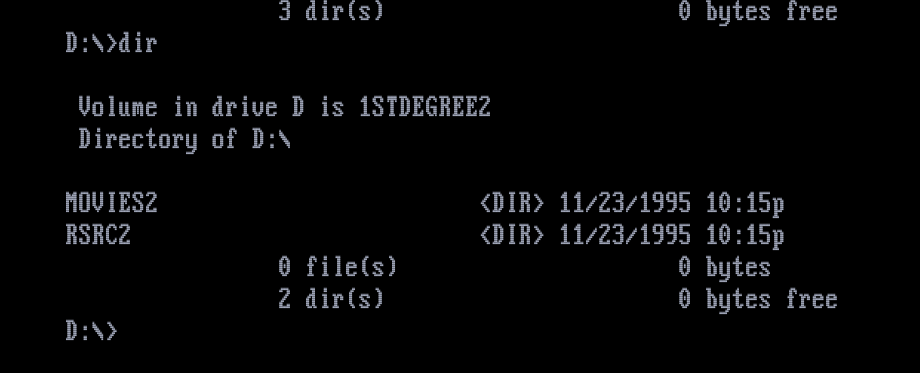
Desde DOS ejecuta C: y WIN. La base de Windows 3.1 debe iniciar correctamente.
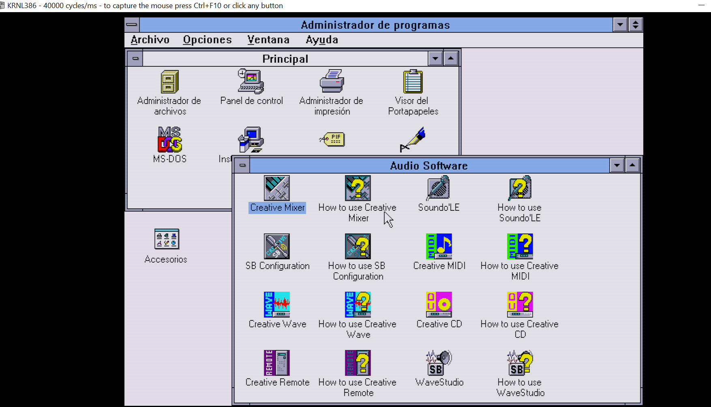
3. Selecciona el modo gráfico de 64K colores
El documento original IT1DREAD.TXT recomienda 640 × 480 y color de 15/16 bits para los vídeos. La base reutilizada tenía 256 colores. En el grupo Principal abre Instalar Windows → Opciones → Cambiar configuración del sistema y elige S3 964 1.41B5 640x480 64K colors. Si el controlador no está instalado, sigue primero el procedimiento de preparación de la base enlazado arriba.
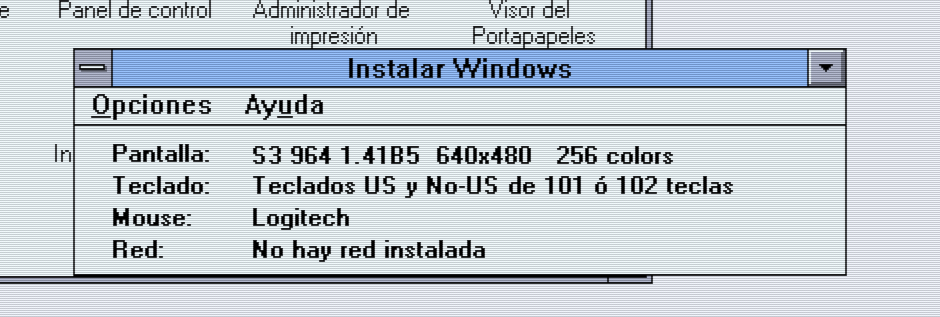
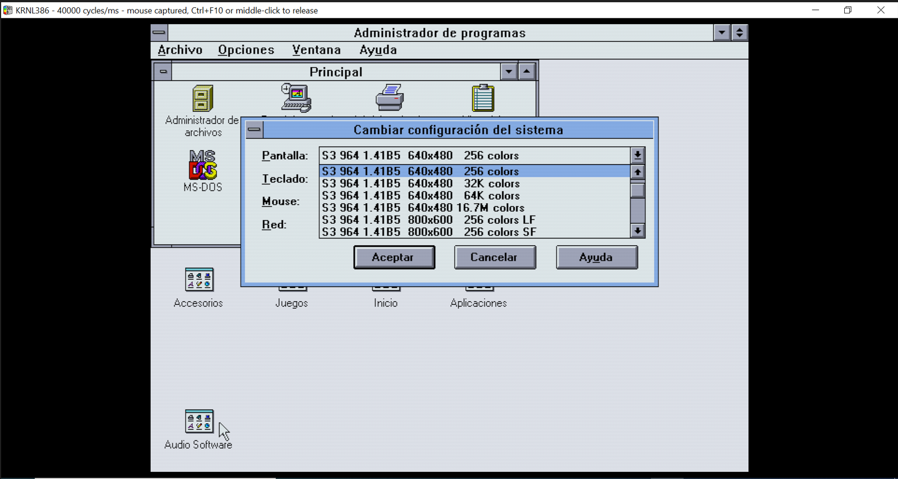
Reinicia Windows y verifica la selección.
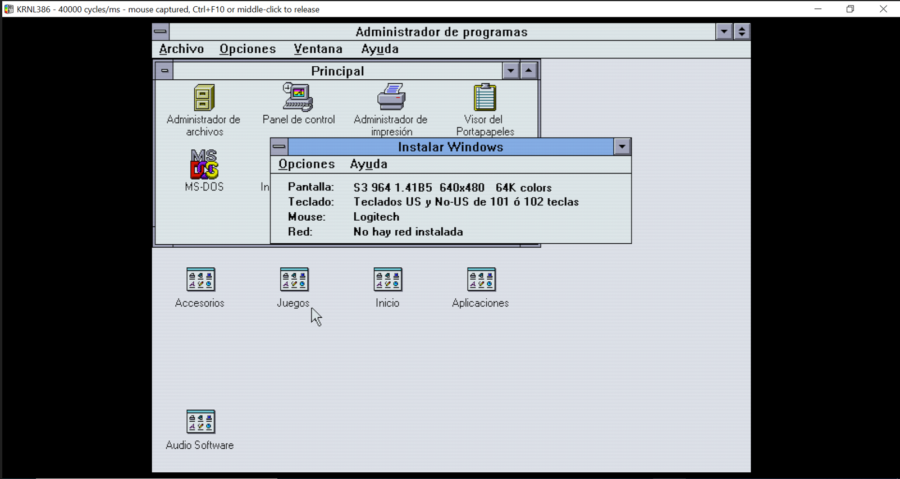
4. Instala el videojuego desde el primer CD
En el Administrador de programas selecciona Archivo → Ejecutar, escribe D:\INSTALL.EXE y continúa con el asistente original. La instalación crea C:\INTHE1ST.
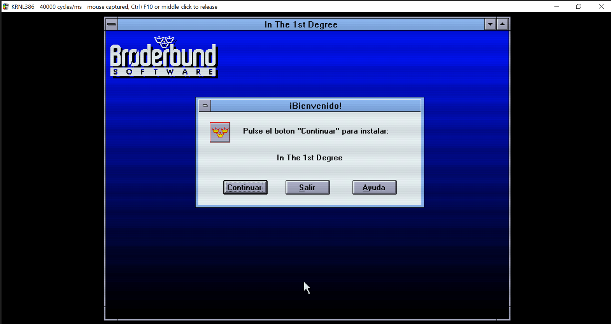
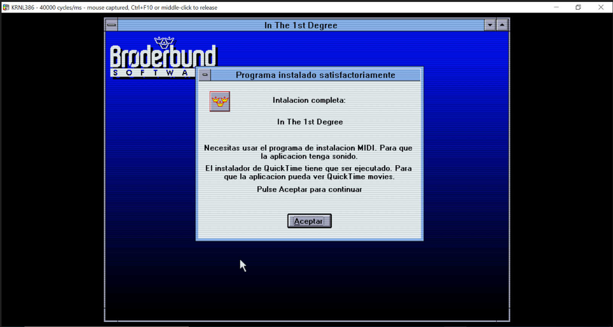
El asistente inicia la configuración MIDI. Prueba las dos canciones con los controladores disponibles; en nuestro equipo seleccionamos SB16 MIDI Out / Song 2, que reprodujo mejor el arreglo indicado de piano, bajo y batería. Acepta con OK. Esta opción utiliza la salida MIDI Win32 del anfitrión; no garantiza idéntica síntesis en otros equipos.
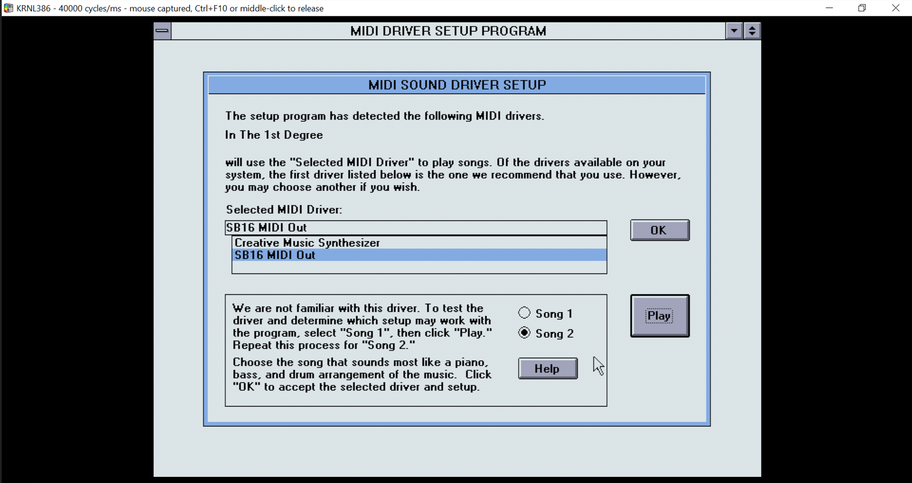
A continuación se inicia Apple QuickTime for Windows 2.03, incluido en el CD. Pulsa Install y acepta el mensaje de éxito. Al terminar se crea el grupo Broderbund Software con el juego, la utilidad MIDI y el archivo Léeme. Reinicia Windows.
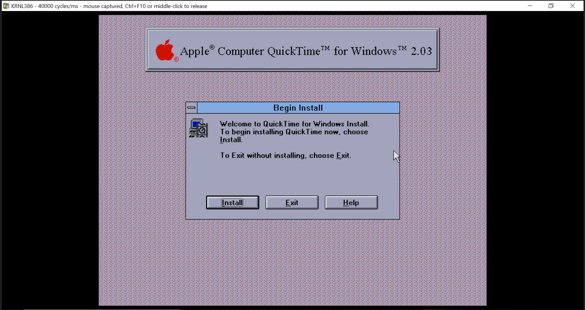
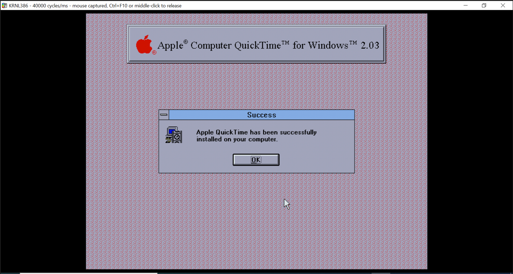
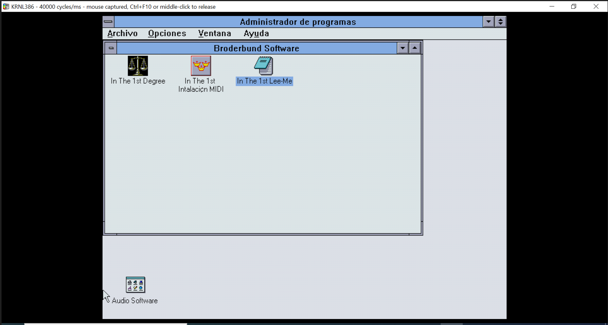
5. Actualiza QuickTime: el ajuste decisivo
En nuestra prueba, QuickTime 2.03 se instaló sin errores pero no consiguió abrir los vídeos originales. El juego mostraba una pantalla negra hasta pulsar el ratón. El fallo se reprodujo también en Movie Player, tanto desde el CD como desde el disco duro emulado. La instalación de QuickTime 2.1.2 resolvió el problema sin alterar los archivos MOV ni los ejecutables del juego. No se ha identificado la causa interna exacta.
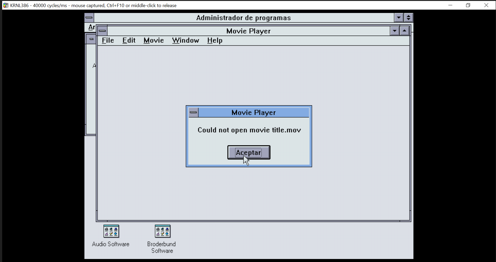
Sigue la guía técnica de instalación y configuración de QuickTime 2.1.2. En esta edición aplicamos el procedimiento de actualización desde 2.03 con copia de seguridad previa, el instalador de 16 bits y sin añadir los complementos de navegador ni QuickTime VR. La instalación terminó sin incidencias. Reinicia Windows antes de probar el juego.
Como comprobación, ejecuta C:\WINDOWS\PLAYER.EXE, abre D:\MOVIES1\TITLES\TITLE.MOV desde File → Open y reproduce el vídeo. En nuestro laboratorio se reprodujo correctamente con QuickTime 2.1.2. Cierra Movie Player y ejecuta el juego desde el grupo Broderbund Software. La introducción y los vídeos durante la investigación funcionaron correctamente.
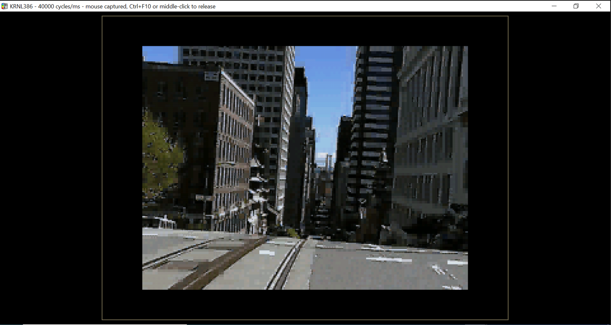
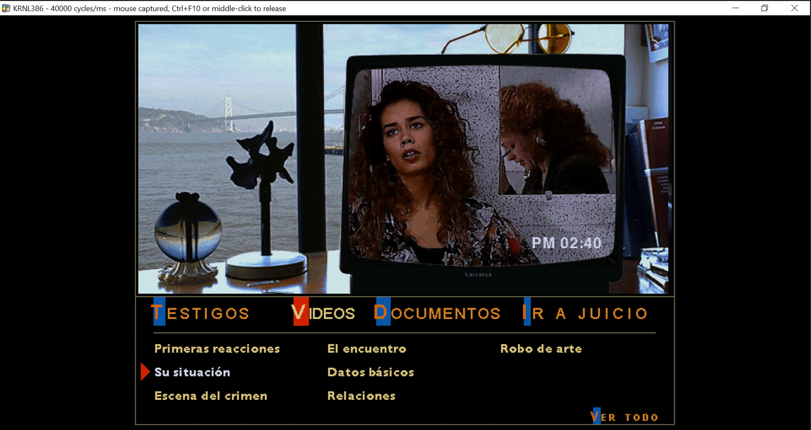
6. Comprueba la partida y el intercambio de CD
Inicia una investigación, selecciona testimonios y vídeos, guarda la partida, sal del juego y vuelve a abrirlo. Carga la partida guardada desde el menú. Al solicitar el segundo CD, pulsa Ctrl + F4 y confirma el mensaje del juego. Ambas operaciones se validaron en la sesión del laboratorio.
7. Configuración definitiva del entorno portable
Las propiedades del acceso directo original confirman el ejecutable C:\INTHE1ST\DEGREE.EXE y el directorio de trabajo C:\INTHE1ST, sin argumentos adicionales.
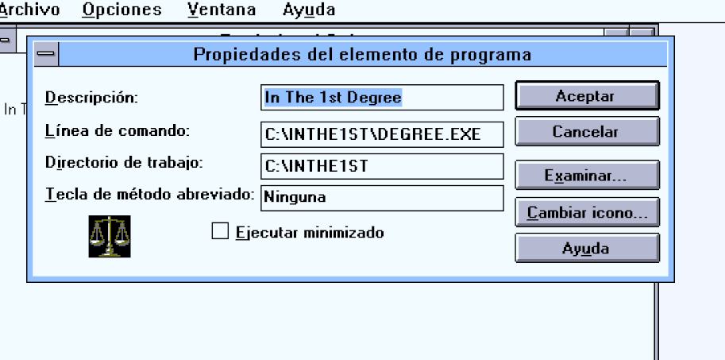
Con DOSBox cerrado, guarda una copia de la configuración previa y sustituye el contenido de dosbox.conf por el siguiente. No hace falta montar C: dos veces. MOUNT admite las dos ISO y reemplaza el comando antiguo IMGMOUNT. Los parámetros de ciclos corresponden a DOSBox Staging 0.83.0.
[sdl]
fullscreen = true
[dosbox]
machine = svga_s3
memsize = 32
[cpu]
core = normal
cputype = auto
cpu_cycles = 40000
cpu_cycles_protected = 40000
cpu_throttle = false
[sblaster]
sbtype = sb16
sbbase = 220
irq = 7
dma = 1
hdma = 5
[midi]
mpu401 = intelligent
mididevice = port
[autoexec]
@echo off
mount d "..\CD\1STDEGREE1.ISO" "..\CD\1STDEGREE2.ISO"
c:
call AUTOEXEC.BAT
cd \INTHE1ST
win DEGREE.EXE
exitSe conservan 32 MB de memoria por ser una configuración funcional para Windows 3.1, aunque DOSBox advierte sobre valores superiores a 31 MB. Se mantiene el núcleo normal. El filtro gráfico adaptativo predeterminado puede producir líneas de barrido CRT; la resolución emulada es 640 × 480 y no se estira a 16:9.
En la raíz de InThe1stDegree, crea InThe1stDegree.bat:
@echo off
setlocal
cd /d "%~dp0dosbox-staging-v0.83.0_win3X"
dosbox.exe --noprimaryconf --conf dosbox.conf
endlocalLa estructura resultante es:
InThe1stDegree/
InThe1stDegree.bat
CD/
1STDEGREE1.ISO
1STDEGREE2.ISO
dosbox-staging-v0.83.0_win3X/
dosbox.exe
dosbox.conf
resources/
drives/
c/
AUTOEXEC.BAT
WINDOWS/
INTHE1ST/Conserva también las DLL y demás archivos del paquete de DOSBox y de la base Windows. El BAT arranca en el directorio correcto usando %~dp0; --noprimaryconf evita cargar la configuración global. El juego se inicia directamente a pantalla completa. Al salir regresa al Administrador de programas; al salir de Windows, DOSBox se cierra. La copia completa a otra ubicación del mismo equipo y el lanzamiento desde allí se probaron correctamente.
8. Matriz de validación funcional
| Subsistema | Estado | Observaciones |
|---|---|---|
| Instalación | Correcto | Instalador original y actualización QuickTime |
| Arranque y menús | Correcto | Arranque directo y menú en castellano |
| Vídeos/cinemáticas | Correcto | Intro y vídeos en partida con QuickTime 2.1.2 |
| Gráficos 2D | Correcto | Interfaz y modo S3 64K |
| Gráficos 3D | No aplicable | No se ha evaluado un subsistema 3D independiente |
| Sonido y música | Correcto con limitaciones | Prueba MIDI y funcionamiento general; no se hizo medición separada de voces y sincronización |
| Ratón | Correcto | Navegación y juego representativo |
| Teclado | Correcto con limitaciones | Cambio de CD mediante atajo; no se probaron todos los atajos del juego |
| Gamepad/joystick | No probado | No necesario para las pruebas realizadas |
| Inicio y juego representativo | Correcto | Investigación interactiva |
| Guardado y carga | Correcto | Recuperación después de cerrar y reabrir |
| Cambio de CD/escena | Correcto | Cambio de disco confirmado durante el juego |
| Multijugador | No aplicable | No forma parte de la prueba |
| Cierre | Correcto | Salida del juego y cierre del emulador al salir de Windows |
| Portabilidad | Correcto con limitaciones | Traslado a otro directorio del mismo equipo |
9. Límites y referencias
Estado: funcional con ajustes, probado el 28/11/2026. No se ha completado una partida de principio a fin ni repetido la instalación desde una base Windows virgen; tampoco se ha probado Windows 11 u otro equipo físico. El dispositivo MIDI depende del anfitrión. La configuración modernizada fue validada funcionalmente, aunque no se aportó el log final para confirmar la desaparición de todos los avisos. Los resultados audiovisuales proceden de pruebas del operador y capturas, no de mediciones instrumentales.
- DOSBox Staging 0.83: Windows 3.1.
- DOSBox Staging 0.83: almacenamiento.
- Apple TN1074: QuickTime for Windows, Resolving Common Installation Issues (copia histórica).
- Apple: QuickTime 2.1.2, correcciones (copia histórica).
- WinWorld: QuickTime 2.x.
- Fuentes primarias:
IT1DREAD.TXTdel CD 1 (27/07/1995) yREADME16.TXTyPROBS16.TXTdel paquete QuickTime (11/12/1996); evidencias propias de PC Game Archive, 28/11/2026.